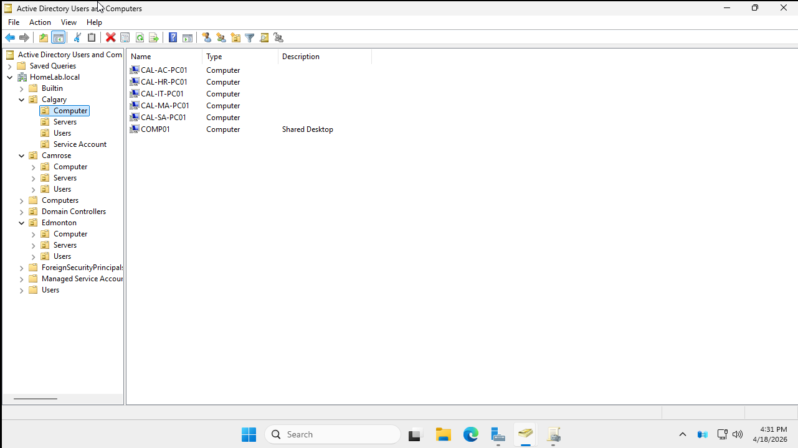

Projects

Active Directory Home Lab
Built a full enterprise-style AD environment on Windows Server 2022 using VMware. Deployed OUs, 45 users, 15 security groups, and 15 computers using PowerShell automation. Configured 8 GPOs including desktop wallpaper, USB restriction, drive mapping, and access control. Set up FSRM quotas, fine-grained password policies, RDP access control, and a kiosk service account with auto-login.

IT Support Home Lab — osTicket Help Desk
Built a virtualized help desk environment using VMware, Ubuntu Server 24.04, and osTicket. Configured Apache, MySQL, and UFW firewall. Created and resolved realistic IT support tickets simulating a real help desk workflow.

Lillup – Frontend Web Application (Capstone Project)
A responsive frontend web platform developed as a capstone project for Lillup. Built with React, HTML, CSS, and JavaScript, the application includes a landing page, download portal, authentication interface, and account setup workflow.